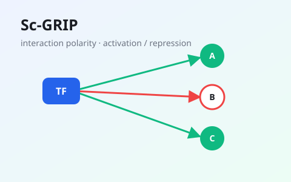
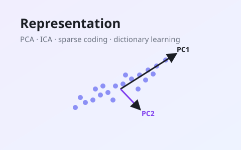
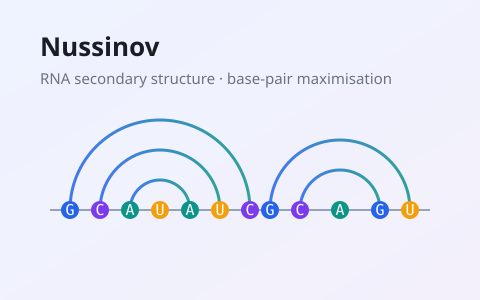
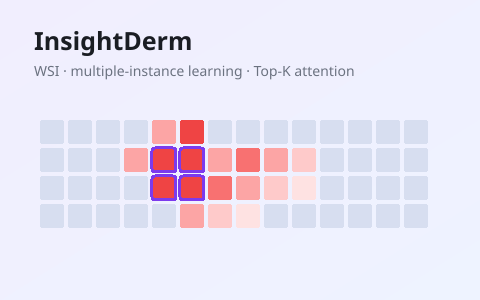

IEEE ICDM 2025：用图卷积框架从单细胞 RNA 数据推断转录因子—基因互作的极性（激活 / 抑制）。A graph-convolutional framework that infers the polarity (activation / repression) of TF–gene interactions from single-cell RNA data.

以 Pluto + Makie 打造的可玩笔记本，互动游戏化解读 马毅实验室《Deep Representation Learning》第 2 章——PCA、ICA、稀疏编码与字典学习。A Pluto + Makie interactive lesson on linear & independent structure: PCA, ICA, sparse coding and dictionary learning.

互动式讲解 RNA 二级结构预测的经典动态规划算法：输入序列，实时观看 DP 矩阵填充与最大碱基配对回溯。An interactive walkthrough of the Nussinov–Jacobson dynamic-programming algorithm for RNA secondary-structure prediction.

JKU Linz 人工智能硕士论文：用双流多示例学习（DSMIL）+ Top-K 关键特征多头注意力，从千兆像素全切片图像（WSI）诊断皮肤癌。Master’s thesis (MSc AI): skin-cancer diagnosis from gigapixel whole-slide images via Dual-Stream MIL + Top-K Critical-Features Multi-Head Attention.